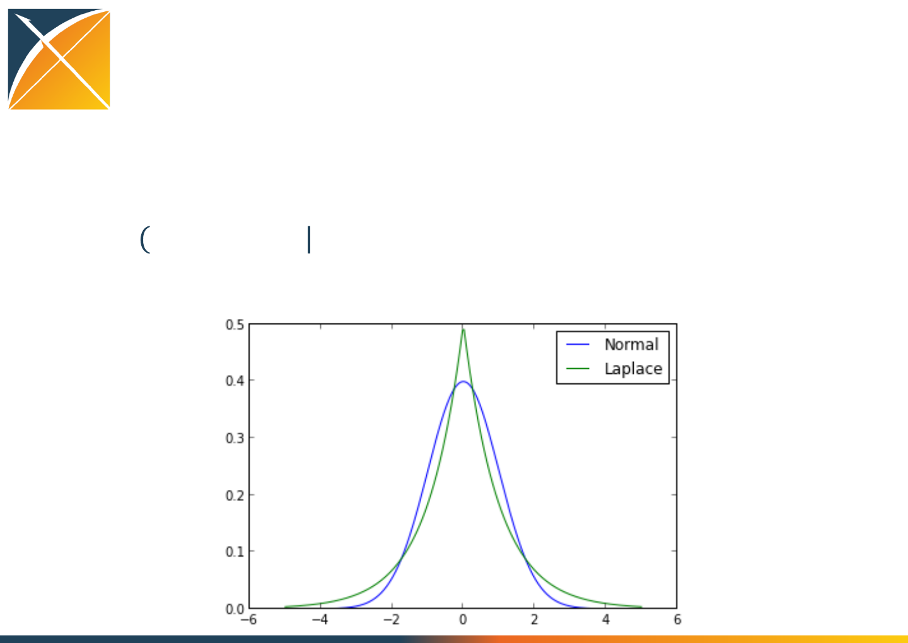
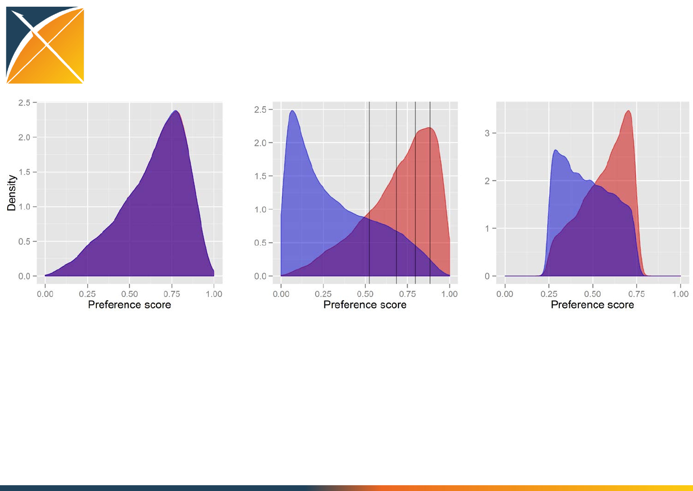

Overview of the
CohortMethod package
Martijn Schuemie
CohortMethod is part of the
OHDSI Methods Library
s
New-user cohort studies using
large-scale regression for
propensity and outcome
models
Cohort Method
s
Self-Controlled Case Series
analysis using few or many
predictors, includes splines for
age and seasonality.
Self-Controlled Case Series
s
A self-controlled cohort
design, where time preceding
exposure is used as control.
Self-Controlled Cohort
s
A self-controlled design, but
using temporal patterns
around other exposures and
outcomes to correct for time-
varying confounding.
IC Temporal Pattern Disc.
s
Build and evaluate predictive
models for user-specified
outcomes, using a wide array
of machine learning
algorithms.
Patient Level Prediction
s
Use negative control
exposure-outcome pairs to
profile and calibrate a
particular analysis design.
Empirical Calibration
s
Use real data and established
reference sets as well as
simulations injected in real
data to evaluate the
performance of methods.
Method Evaluation
s
Connect directly to a wide
range of database platforms,
including SQL Server, Oracle,
and PostgreSQL.
Database Connector
s
Generate SQL on the fly for
the various SQL dialects.
Sql Render
s
Highly efficient
implementation of regularized
logistic, Poisson and Cox
regression.
Cyclops
s
Support tools that didn’t fit
other categories, including
tools for maintaining R
libraries.
Ohdsi R Tools
Estimation methods Prediction methods Method characterization Supporting packages
Under construction
s
Automatically extract large
sets of features for user-
specified cohorts using data in
the CDM.
Feature Extraction
s
Case-control studies,
matching controls on age,
gender, provider, and visit
date. Allows nesting of the
study in another cohort.
Case-control

Technologies
CohortMethod uses
•DatabaseConnector and SqlRender to interact with the CDM
data
–SQL Server
–Oracle
–PostgreSQL
–Amazon RedShift
–Microsoft APS
•ff to work with large data objects
•Cyclops for large scale regularized regression

Graham study steps
1. Getting the necessary data from the database
2. Defining the study population
3. Creating a propensity model
4. Matching
5. Fitting the outcome model
+ generating various diagnostics

Generic study steps
1. Getting the necessary data from the database
2. Defining the study population
3. [Creating a propensity model]
4. [Trimming / Matching / Stratification]
5. Fitting the outcome model
+ generating various diagnostics
Replication of Garbe et al. using the
OHDSI framework
What is the design used by Garbe et al?
Input parameter Design choice
Target cohort (T) Celecoxib new users
Comparator cohort (C) Traditional non-steroid antiflammatory
drugs (NSAID) new users
Outcome cohort (O) Upper gastrointestinal complications
(UGIC)
Time-at-risk cohort start cohort end
Model specification 1:1 propensity score-matched
multivariable conditional Poisson
regression

Step 1: Getting the necessary
data from the database

Step 1: Getting the necessary data from
the database
•Target, comparator, and outcome cohorts
–From the cohort table in the CDM (ATLAS)
–From a table with the same structure as the cohort table
–From the drug_era and/or condition_era tables
–CohortMethod can
•limit to first exposure
•remove subjects in both cohorts
•enforce washout period
•Covariates
–Automatically constructed default set
–Custom defined covariates (see FeatureExtraction package)
–Need to exclude drugs of interest (done automatically when
using drug_era)

getDbCohortMethodData
Arguments for connecting to the database:
•connectionDetails: How to connect to the database
•cdmDatabaseSchema: The database schema of the CDM
•oracleTempSchema: Only used on Oracle
•cdmVersion: currently 4 or 5 are supported

getDbCohortMethodData
Arguments for finding the exposures:
•exposureDatabaseSchema: Database schema of exposures
•exposureTable: Table of exposures
•targetId: Cohort definition ID or drug concept ID
•comparatorId: Cohort definition ID or drug concept ID
•firstExposureOnly: restrict to first exposure per person
•removeDuplicateSubjects: remove subjects in both cohorts
•washoutPeriod: enforce minimum amount of observation
prior to index
•studyStartDate, studyEndDate: Also truncates follow-up time

getDbCohortMethodData
Arguments for finding the outcomes:
•outcomesDatabaseSchema: Database schema of outcomes
•outcomesTable: Table of outcomes
•outcomeIds: Cohort definition IDs or condition concept IDs

getDbCohortMethodData
Arguments for creating the covariates:
•covariateSettings: Created using the covariateSettings
function
•excludeDrugsFromCovariates: Automatically exclude drugs of
interest from the covariates (only works if targetId and
comparatorId are concept IDs)

getDbCohortMethodData
Result:
An object of type cohortMethodData
Need to save and load using saveCohortMethodData and
loadCohortMethodData
Diagnostics
Run summary() on cohortMethodData object
•Do target, comparator, and outcomes have subjects?
•Are covariates constructed?
CohortMethodData object summary
Treatment concept ID: 1
Comparator concept ID: 2
Outcome concept ID(s): 3
Treated persons: 17058
Comparator persons: 13566
Outcome counts:
Event count Person count
3 6535 4279
Covariates:
Number of covariates: 17
Number of non-zero covariate values: 70605

Now try it yourself!
•Specify the connection details…
•Run commands up to and including saveCohortMethodData
command
•Run summary on cohortMethodData object
•Did everything go ok?
This is what you should get
CohortMethodData object summary
Treatment concept ID: 1
Comparator concept ID: 2
Outcome concept ID(s): 3
Treated persons: 17058
Comparator persons: 13566
Outcome counts:
Event count Person count
3 6535 4279
Covariates:
Number of covariates: 17
Number of non-zero covariate values: 70605

Step 2: Defining the study
population

Step 2: Defining the study population
•Select one of the outcomes of interest
•Enforce additional filtering criteria
•Define risk window

createStudyPopulation
Misc arguments:
•cohortMethodData: As created using
getDbCohortMethodData
•outcomeId: The ID of the outcome of interest
•firstExposureOnly, removeDuplicateSubjects,
washoutPeriod: Same as in getDbCohortMethodData
•removeSubjectsWithPriorOutcome: Remove subjects who
have the outcome prior to the index date?
•priorOutcomeLookback: How many days should we look back
createStudyPopulation
Arguments for risk window:
•riskWindowStart: Start day relative to index
•addExposureDaysToStart: Set to TRUE if riskWindowStart
should be relative to exposure end date instead
•riskWindowEnd: End day relative to index
•addExposureDaysToEnd: Set to TRUE if riskWindowEnd
should be relative to exposure end date instead
•minDaysAtRisk: Remove subjects with less than this number
of days at risk
Risk window = time exposed
riskWindowStart = 0
addExposureDaysToStart = FALSE
riskWindowEnd = 0
addExposureDaysToEnd = TRUE
Risk window = intent to treat
riskWindowStart = 0
addExposureDaysToStart = FALSE
riskWindowEnd = 9999
addExposureDaysToEnd = FALSE
Risk window = time exposed + 30 days
riskWindowStart = 0
addExposureDaysToStart = FALSE
riskWindowEnd = 30
addExposureDaysToEnd = TRUE
Risk window = 30 days following index
riskWindowStart = 0
addExposureDaysToStart = FALSE
riskWindowEnd = 30
addExposureDaysToEnd = FALSE

createStudyPopulation
Result:
A data frame specifying the study population
Diagnostics
run getAttritionTable or drawAttritionDiagram
•Are the number of dropouts what you’d expect?

Now try it yourself!
•Run code in section Defining the study population
•Check the attrition diagram
This is what you should get:

Step 3: Creating a
propensity model

Step 3: Creating a propensity model
) = ( 0 + 11 + 22 + 33 + … )
With prior for every :
Using regularized logistic regression

Hyper-parameter
What is the right width of the prior distribution?
Too wide:
-convergence problems
- overfitting
Too narrow:
-‘underfitting’: missing important predictors
Default: select hyper-parameter through 10-fold cross-validation.
This aims to optimize the out-of-sample likelihood

createPs
Important arguments:
•cohortMethodData: As created using
getDbCohortMethodData
•population: The study population
•prior: object as created using createPrior
–priorType: “laplace” or “none”
–variance: variance of the prior (when not using cross-validation)
–useCrossValidation: TRUE or FALSE
–exclude: exclude these covariate IDs from regularization
•control: object as created using createControl
–tolerance: numerical tolerance
–folds: number of cross-validation folds
–cvRepetitions: number of cross-validation repetitions
–threads: number of CPU threads to use

createPs
Returns:
The study population data frame with an extra column for the
propensity score
Diagnostics
•Did createPs complain about perfect prediction?
•Run computePsAuc: 0.5 < AUC < 1?
•Run getPsModel: Strongest predictors are not the drugs of
interest?
•Run plotPs: overlap between cohorts?
Good: Bad:
Now try it yourself!
•Run code in section Propensity scores up to
head(propensityModel)
–Modify the number of threads!
•Inspect the PS distribution plot
•Inspect the PS model
This is what I should get:
Step 4:
Matching / Stratification /
Trimming

Step 4:
Matching / Stratification / Trimming
Matching
For every treated
subject, select n
comparators using
greedy matching
Stratification
Stratify into equally-
sized strata based on
PS
Trimming
Remove subjects with
high and low PS

matchOnPs &
matchOnPsAndCovariates
Arguments for both functions:
•population: population object with propensity scores
•caliper: maximum allowed difference in PS
•caliperScale: “standardized” or “propensity score”
•maxRatio: maximum number of comparators per target
Arguments for matchOnPsAndCovariates:
•cohortMethodData: As created using
getDbCohortMethodData
•covariateIds: must match on these covariates

stratifyByPs &
stratifyByPsAndCovariates
Arguments for both functions:
•population: population object with propensity scores
•numberOfStrata: number of strata
Arguments for stratifyByPsAndCovariates :
•cohortMethodData: As created using
getDbCohortMethodData
•covariateIds: must match on these covariates

trimByPs & trimByPsToEquipoise
Argument for both functions:
•population
Argument for trimByPs :
•trimFraction: Fraction to be removed from each group
Argument for trimByPsToEquipoise :
•bounds: Bounds on the preference score
Diagnostics
•Run getAttritionTable or drawAttritionDiagram: did we not
lose everyone?
•Run computeCovariateBalance and
plotCovariateBalanceScatterPlot: standardized difference <
0.1 for all covariates?
Now try it yourself!
•Run the rest of the code in section Propensity scores
•Inspect the attrition diagram
•Inspect the balance scatter plot
This is what you should get:

Step 5: Fitting the outcome
model

Step 5: Fitting the outcome model
Regression for outcome with at least treatment as predictor
Types:
•Logistic: compares risks
•Poisson: compares rates
•Cox: compares time-to-event
Conditioning:
•Not conditioned
•Conditioned on matches set / strata
Covariates:
•None
•Same as used in propensity model
fitOutcomeModel
Arguments:
•population: population with or without strata
•cohortMethodData: As created using getDbCohortMethodData
•modelType: “logistic”, “poisson”, or “cox”
•stratified: condition on strata?
•useCovariates: add same covariates as used in PS?
•prior: object as created using createPrior
–priorType: “laplace” or “none”
–variance: variance of the prior (when not using cross-validation)
–useCrossValidation: TRUE or FALSE
–exclude: exclude these covariate IDs from regularization
•control: object as created using createControl
–tolerance: numerical tolerance
–folds: number of cross-validation folds
–cvRepetitions: number of cross-validation repetitions
–threads: number of CPU threads to use

Diagnostics
•For Cox models run plotKaplanMeier: Evidence of non-
proportionality?
Now try it yourself!
1. Run code in the section Outcome Model
2. Change the model to Cox regression
This is what you should get after step 2:
Model type: cox
Stratified: TRUE
Use covariates: FALSE
Status: OK
Estimate lower .95 upper .95 logRr seLogRr
treatment 0.62500 0.18883 1.87314 -0.47000 0.5853

Generic study steps
1. Getting the necessary data from the database
2. Defining the study population
3. [Creating a propensity model]
4. [Trimming / Matching / Stratification]
5. Fitting the outcome model
+ generating various diagnostics
All-by-all support
CohortMethod
Target – (Comparator) - Outcome Analysis settings
Target – (Comparator) - Outcome
Target – (Comparator) - Outcome
Drug – Comparator - Outcome
Analysis settings
Analysis settings
Analysis settings
Estimates, Diagnostics
47
For:
•Sensitivity analyses
•Including negative controls
•Methods research
•Safety surveillance

Negative controls as study diagnostics
•Negative control outcomes are outcomes not
believed to be caused by either exposure
•Assume true HR = 1
•Observe distribution of estimates
Negative control distribition
Approx. 95% of estimates should have 1 inside 95%
confidence interval

Further things to try
•Change code to use all covariates (instead of
handpicked ones)
•Remove people with prior outcomes
•Create a Kaplan-Meier plot
Counterfactual – other track
•Learned how to create the cohorts we used

Counterfactual – other track
•Learned how to create the cohorts we used
•Learned to think about the study design
•Learned how to use Atlas to generate starting
R code